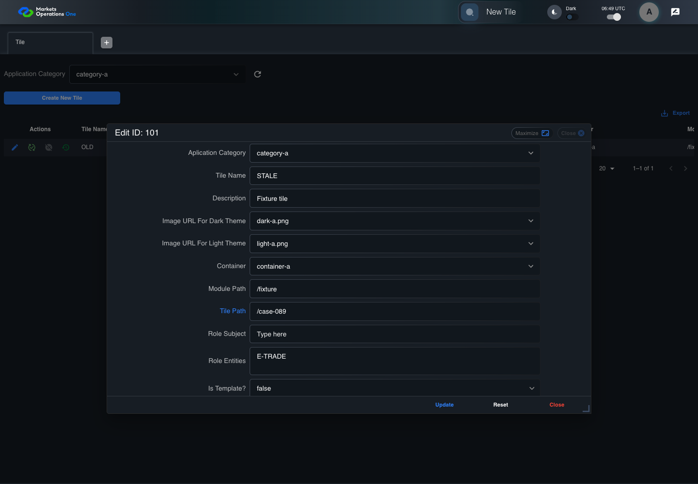
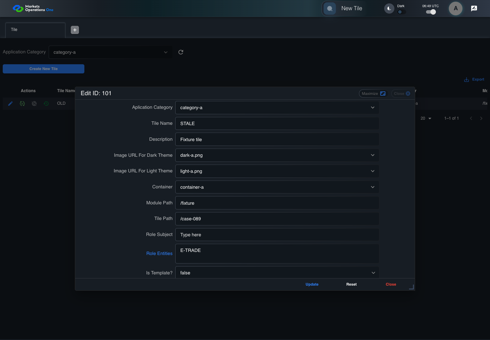

BFF-ADM-089 current BFF administration through actual UI
FAIL · application/run-072/bff-adm-089-current-bff-administration-through-actual-ui-1b38e8eba73e-attempt-1 · ACTUAL_APPLICATION_LOCAL_SERVICES
Actual current React and exact-current BFF admin controllers/services/JPA with actual migration DDL in disposable PostgreSQL. Controlled OUD/EMS2 identities and local Spring bootstrap. Fixture SQL seeds/mutates isolated records; service errors are actual database errors. Undefined agreed messages remain unresolved acceptance.
2026-10-22T06:49:17.760Z to 2026-10-22T06:49:31.168Z
Assertions and result · Artifact manifest · Exact run inputs and source hashes
Result SHA-256:9e8299246cec0b9609ed15791bcae66eb0cfcf4b7a41aa55f0e69892abf6311dRetained failure details
[
{
"message": "Error: \u001b[2mexpect(\u001b[22m\u001b[31mlocator\u001b[39m\u001b[2m).\u001b[22mtoBeVisible\u001b[2m(\u001b[22m\u001b[2m)\u001b[22m failed\n\nLocator: locator('.MuiAlert-root').filter({ has: locator('.MuiAlert-message') })\nExpected: visible\nTimeout: 5000ms\nError: element(s) not found\n\nCall log:\n\u001b[2m - Expect \"toBeVisible\" locator('.MuiAlert-root').filter({ has: locator('.MuiAlert-message') }) with timeout 5000ms\u001b[22m\n\u001b[2m - waiting for locator('.MuiAlert-root').filter({ has: locator('.MuiAlert-message') })\u001b[22m\n",
"stack": "Error: \u001b[2mexpect(\u001b[22m\u001b[31mlocator\u001b[39m\u001b[2m).\u001b[22mtoBeVisible\u001b[2m(\u001b[22m\u001b[2m)\u001b[22m failed\n\nLocator: locator('.MuiAlert-root').filter({ has: locator('.MuiAlert-message') })\nExpected: visible\nTimeout: 5000ms\nError: element(s) not found\n\nCall log:\n\u001b[2m - Expect \"toBeVisible\" locator('.MuiAlert-root').filter({ has: locator('.MuiAlert-message') }) with timeout 5000ms\u001b[22m\n\u001b[2m - waiting for locator('.MuiAlert-root').filter({ has: locator('.MuiAlert-message') })\u001b[22m\n\n at BffAdminApp.errorAlert (/Users/lushevol/code/github/ratan-release-impact/workbench/e2e/support/bff-admin-app.ts:166:169)\n at /Users/lushevol/code/github/ratan-release-impact/workbench/e2e/audit-specs/bff-admin.spec.ts:49:166\n at AuditCapture.step (/Users/lushevol/code/github/ratan-release-impact/workbench/e2e/support/audit-fixture.ts:94:21)\n at /Users/lushevol/code/github/ratan-release-impact/workbench/e2e/audit-specs/bff-admin.spec.ts:18:27",
"location": {
"file": "/Users/lushevol/code/github/ratan-release-impact/workbench/e2e/support/bff-admin-app.ts",
"column": 169,
"line": 166
},
"snippet": "\u001b[90m at \u001b[39m../support/bff-admin-app.ts:166\n\n 164 | }\n 165 | async assertUnchanged():Promise<void>{expect(await this.snapshot()).toEqual(this.expectedPersisted);expect(await this.gridSnapshot()).toEqual(this.initialGrid);}\n> 166 | async errorAlert(exact?:string):Promise<void>{const alert=this.page.locator('.MuiAlert-root').filter({has:this.page.locator('.MuiAlert-message')});await expect(alert).toBeVisible();await expect(alert).toHaveClass(/MuiAlert-standardError|MuiAlert-filledError|MuiAlert-outlinedError/);if(exact)await expect(alert.locator('.MuiAlert-message')).toHaveText(exact);else {const mutation=[...this.requests].reverse().find(request=>['create','update','audit'].includes(request.operation));expect(mutation?.status).toBeGreaterThanOrEqual(400);await expect(alert.locator('.MuiAlert-message')).not.toHaveText('');await this.audit.record('undefined-message-contract',{canonical:'Agreed message is unavailable. Only real error response and visible nonempty error are characterized.',actual:await alert.innerText()});}}\n | ^\n 167 | async cell(name:string,id:string){return this.ui.reveal(adminFields[name]??name,id);}\n 168 | }\n 169 |"
}
]Machine observations
- actual-identity-projection.json
e32634c51115b490d5d5a93761fb64f80762ef74a1d22ce1c8a2d97b5462d843 - baseline-inputs.json
fc512f48467d1b6e83795159b05964c294186c9f4c58791e7f03835bab10eb7c - bff-boundary.json
e7eba405c797b090eddf28c56dec6cdd83317612cdd6c00f691ec8a80e80ccdc - committed-ui-submission-comparisons.json
97effcf72d21acd80af99e866e4342515ead98aa8bceeabe468236e26307da66 - concurrent-admin-b-maker.json
19d9eab6aa3b17bb535cedededdd5d64b5382a1f577d72bcec19820eaca1559e - empty-filter-rule-representation.json
bc1b00cfe165c36ad3df43994f60ceec8ab01543f94706a036fb08b741b87d4e - fixture-step-10.json
8ffa22e1578c368e3c42a0686e72688b99026299b22c7880ffae03214417b60b - fixture-step-11.json
b0702e47f82a70691d03ad911440d72f2d0df05231de3700e02faa63daa9579f - fixture-step-6.json
4997dc58a72bafed807a303bc11b9b6e972bc43c7459d2462f792fa4b062f8a3 - fixture-step-7.json
1d6a2d2767e9ca887da3e5dda22ffec0b308b052af10800fcd3247cae36c2934 - fixture-step-8.json
d766aa1f1a533e1b5112e2d524a24f9436703769fe1cd2352fb513f9f05c0fe5 - fixture-step-9.json
79323da436851cfc889796bf9f3accfb03659761a5e483c367b91d8b36154a33 - initial-persisted-records.json
8c2261e488fc213282931c8dc4805b4468035e1cbfd081677555e291ae1ab1db - persisted-after-submit.json
64f37375175d36e3cee7392b3fc2e631afb508183ca036d32600edd275334d80 - reference-snapshot-3.json
46cb1363a331c2ea269d6b046656b01d8c1c1f66f37f1f1b931b8dbb82f0c610 - reference-snapshot-4.json
69ca5bd45129fb57d3bf8e0b0c1ce418c5e8d30a1885672ff78e0c36920a2da7 - rejection-or-policy-observation.json
efeb9145ef9c22613d494aea3ec47046b0c02f94e09d98ea8b0eee77599f17f1 - ui-origin-bff-requests.json
9ce7c8a659fc57aabb0994cbb2077ce5ef31e175aef56b41425fee7579529ba3
Screenshot capture: CAPTURED. Named frames: 23.
Step screenshot evidence: INCOMPLETE. 22/24 canonical steps have execution screenshots.
Step 23 has no screenshot from an executed step. Step 24 has no screenshot from an executed step.
Canonical step timeline
Given Admin A uses subject "admin-a" with role "FMO_ADMIN" in an isolated authenticated browser
Execution: PASSED.1. step-01 Visible state after step 1: Given Admin A uses subject "admin-a" with role "FMO_ADMIN" in an isolated authenticated browser
2026-10-22T06:49:20.533Z · 1440×1000
Step: /Users/lushevol/code/github/ratan-release-impact/workbench/tasks/ui-test-coverage-20261022/test-cases.md:18462
SHA-256:f3a0d935e974012edca0d3165f4896793d7c18851f470dae93bdac43e4e34b55And the controlled Tile fixture records the initial grid rows and persisted values
Execution: PASSED.2. step-02 Visible state after step 2: And the controlled Tile fixture records the initial grid rows and persisted values
2026-10-22T06:49:20.796Z · 1440×1000
Step: /Users/lushevol/code/github/ratan-release-impact/workbench/tasks/ui-test-coverage-20261022/test-cases.md:18463
SHA-256:e7c3fc232caa80b5339c6cc8268b3373f71aa016f856737d3acb6bb4ac59986eAnd Category 101 has label "category-a" and Import Map 201 has Module Name "container-a"
Execution: PASSED.3. step-03 Visible state after step 3: And Category 101 has label "category-a" and Import Map 201 has Module Name "container-a"
2026-10-22T06:49:20.890Z · 1440×1000
Step: /Users/lushevol/code/github/ratan-release-impact/workbench/tasks/ui-test-coverage-20261022/test-cases.md:18464
SHA-256:2f7cf70d173327081740fe9d0cbd56cfcb9890672349f381bfaf3eb4b699aa4bAnd both references belong to "FMO_ADMIN" and the Tile page category filter value is Category 101
Execution: PASSED.4. step-04 Visible state after step 4: And both references belong to "FMO_ADMIN" and the Tile page category filter value is Category 101
2026-10-22T06:49:20.995Z · 1440×1000
Step: /Users/lushevol/code/github/ratan-release-impact/workbench/tasks/ui-test-coverage-20261022/test-cases.md:18465
SHA-256:97fed5ca9654cfbce4eeae092ecad32261b195aa9afd8d328b965f8b078dece5And the Tile grid has record "101" owned by "FMO_ADMIN"
Execution: PASSED.5. step-05 Visible state after step 5: And the Tile grid has record "101" owned by "FMO_ADMIN"
2026-10-22T06:49:21.108Z · 1440×1000
Step: /Users/lushevol/code/github/ratan-release-impact/workbench/tasks/ui-test-coverage-20261022/test-cases.md:18466
SHA-256:67f1183aade13ac015d2f3e553e3cf5c5a8ec8503a231055d3ae8b35ed337ea0And the baseline fixture data defines "Tile Name" as "tile-089"
Execution: PASSED.6. step-06 Visible state after step 6: And the baseline fixture data defines "Tile Name" as "tile-089"
2026-10-22T06:49:21.209Z · 1440×1000
Step: /Users/lushevol/code/github/ratan-release-impact/workbench/tasks/ui-test-coverage-20261022/test-cases.md:18467
SHA-256:0d148472fcaa2a4d61fc14d74d3a771f44c69b69d09e58e606e15154f04da0e2And the baseline fixture data defines "Module Path" as "/fixture"
Execution: PASSED.7. step-07 Visible state after step 7: And the baseline fixture data defines "Module Path" as "/fixture"
2026-10-22T06:49:21.294Z · 1440×1000
Step: /Users/lushevol/code/github/ratan-release-impact/workbench/tasks/ui-test-coverage-20261022/test-cases.md:18468
SHA-256:7ad72df4e32f8fb2d504cab7e50477344f671f3eee725af35689423e26350778And the baseline fixture data defines "Tile Path" as "/case-089"
Execution: PASSED.8. step-08 Visible state after step 8: And the baseline fixture data defines "Tile Path" as "/case-089"
2026-10-22T06:49:21.386Z · 1440×1000
Step: /Users/lushevol/code/github/ratan-release-impact/workbench/tasks/ui-test-coverage-20261022/test-cases.md:18469
SHA-256:1000796849e8f64d32f7e554e9d0afa8b39617cb2b5abe5fe07abc8f385d6259And the baseline fixture data defines "Role Entities" as "E-TRADE"
Execution: PASSED.9. step-09 Visible state after step 9: And the baseline fixture data defines "Role Entities" as "E-TRADE"
2026-10-22T06:49:21.480Z · 1440×1000
Step: /Users/lushevol/code/github/ratan-release-impact/workbench/tasks/ui-test-coverage-20261022/test-cases.md:18470
SHA-256:aa961d791cd5d6c7aea8f156a8fad67138d4ae080dbdd2934413b13b93301bb9And the baseline fixture data defines "Filter Rule" as ""
Execution: PASSED.10. step-10 Visible state after step 10: And the baseline fixture data defines "Filter Rule" as ""
2026-10-22T06:49:21.559Z · 1440×1000
Step: /Users/lushevol/code/github/ratan-release-impact/workbench/tasks/ui-test-coverage-20261022/test-cases.md:18471
SHA-256:ffa9d35c57fca0d17c21693e3d53c5ca96312c1bc5cdf3715b89e156b94e121cAnd the baseline Tile references use "Aplication Category" "category-a" and "Container" "container-a"
Execution: PASSED.11. step-11 Visible state after step 11: And the baseline Tile references use "Aplication Category" "category-a" and "Container" "container-a"
2026-10-22T06:49:21.638Z · 1440×1000
Step: /Users/lushevol/code/github/ratan-release-impact/workbench/tasks/ui-test-coverage-20261022/test-cases.md:18472
SHA-256:e9cbb1e09961d77fe166a955737eb41257655ddffb8f6f4b8bc5a146c686a051And the originally loaded "Tile Name" value is "OLD"
Execution: PASSED.12. step-12 Visible state after step 12: And the originally loaded "Tile Name" value is "OLD"
2026-10-22T06:49:21.702Z · 1440×1000
Step: /Users/lushevol/code/github/ratan-release-impact/workbench/tasks/ui-test-coverage-20261022/test-cases.md:18473
SHA-256:b7e9e333e49139b32c27c7acac2b197b603ba331822b1f180340f419a1c415e1When Admin A clicks the button labeled "Edit" in the Tile grid row with "Record Id" "101"
Execution: PASSED.13. step-13 Visible state after step 13: When Admin A clicks the button labeled "Edit" in the Tile grid row with "Record Id" "101"
2026-10-22T06:49:22.096Z · 1440×1000
Step: /Users/lushevol/code/github/ratan-release-impact/workbench/tasks/ui-test-coverage-20261022/test-cases.md:18474
SHA-256:286b169f713c85ab7e47ae2e12abcd8db8f55a4054ee972cb80f03b4f7cd682bThen the dialog titled "edit ID: 101" is visible on the Tile administration page
Execution: PASSED.14. step-14 Visible state after step 14: Then the dialog titled "edit ID: 101" is visible on the Tile administration page
2026-10-22T06:49:22.186Z · 1440×1000
Step: /Users/lushevol/code/github/ratan-release-impact/workbench/tasks/ui-test-coverage-20261022/test-cases.md:18475
SHA-256:397bac00409d7dbf7a5372b4fa5d00a3d40e4ff98f8894799769d4f0ad9cd410When Admin B completes a controlled concurrent update setting "Tile Name" to "NEW"
Execution: PASSED.15. step-15 Visible state after step 15: When Admin B completes a controlled concurrent update setting "Tile Name" to "NEW"
2026-10-22T06:49:22.391Z · 1440×1000
Step: /Users/lushevol/code/github/ratan-release-impact/workbench/tasks/ui-test-coverage-20261022/test-cases.md:18476
SHA-256:6f6cd806b82af8fd8a804b09797227ce365df017a8cd04036b0c17cc112e6255And Admin A fills the textbox labeled "Tile Name" with "STALE" in dialog "edit ID: 101"
Execution: PASSED.16. step-16 Visible state after step 16: And Admin A fills the textbox labeled "Tile Name" with "STALE" in dialog "edit ID: 101"
2026-10-22T06:49:22.846Z · 1440×1000
Step: /Users/lushevol/code/github/ratan-release-impact/workbench/tasks/ui-test-coverage-20261022/test-cases.md:18477
SHA-256:8c06347089f028edcf3c5e2d5a4d7e69927cc84e17534a040a88727081aeeb02And Admin A fills the textbox labeled "Module Path" with "/fixture" in dialog "edit ID: 101"
Execution: PASSED.17. step-17 Visible state after step 17: And Admin A fills the textbox labeled "Module Path" with "/fixture" in dialog "edit ID: 101"
2026-10-22T06:49:23.286Z · 1440×1000
Step: /Users/lushevol/code/github/ratan-release-impact/workbench/tasks/ui-test-coverage-20261022/test-cases.md:18478
SHA-256:5fba917d33cc09e3f6c1fef5705c996eabcd41a0a47e9bcc6e2bf05748fd367aAnd Admin A fills the textbox labeled "Tile Path" with "/case-089" in dialog "edit ID: 101"
Execution: PASSED.
18. step-18 Visible state after step 18: And Admin A fills the textbox labeled "Tile Path" with "/case-089" in dialog "edit ID: 101"
2026-10-22T06:49:23.720Z · 1440×1000
Step: /Users/lushevol/code/github/ratan-release-impact/workbench/tasks/ui-test-coverage-20261022/test-cases.md:18479
SHA-256:d25851b1468dea9fa84f5eb15059783339f2e6890b2157734c85b126accfdf4dAnd Admin A fills the textarea labeled "Role Entities" with "E-TRADE" in dialog "edit ID: 101"
Execution: PASSED.
19. step-19 Visible state after step 19: And Admin A fills the textarea labeled "Role Entities" with "E-TRADE" in dialog "edit ID: 101"
2026-10-22T06:49:24.150Z · 1440×1000
Step: /Users/lushevol/code/github/ratan-release-impact/workbench/tasks/ui-test-coverage-20261022/test-cases.md:18480
SHA-256:09f942f6a518d0241d686feba35ff2085cd50b3650e3e733512e1989001b96acAnd Admin A fills the textarea labeled "Filter Rule" with "" in dialog "edit ID: 101"
Execution: PASSED.20. step-20 Visible state after step 20: And Admin A fills the textarea labeled "Filter Rule" with "" in dialog "edit ID: 101"
2026-10-22T06:49:24.584Z · 1440×1000
Step: /Users/lushevol/code/github/ratan-release-impact/workbench/tasks/ui-test-coverage-20261022/test-cases.md:18481
SHA-256:ba3439b4dab036eaad5e1f3dfc08b520c4491156a5906969690742ba00776cf2And Admin A clicks the button labeled "Update" in dialog "edit ID: 101"
Execution: PASSED.21. step-21 Visible state after step 21: And Admin A clicks the button labeled "Update" in dialog "edit ID: 101"
2026-10-22T06:49:24.843Z · 1440×1000
Step: /Users/lushevol/code/github/ratan-release-impact/workbench/tasks/ui-test-coverage-20261022/test-cases.md:18482
SHA-256:bc6c096244b23faba7dada1567cfde267a4dcd7127e256c332175ca9d0df7d78Then the alert with severity "error" in the portal snackbar displays the agreed message for a stale-record error
Execution: FAILED.22. step-22-failure Visible state when step 22 failed. Later steps did not execute.
2026-10-22T06:49:29.971Z · 1440×1000
Step: /Users/lushevol/code/github/ratan-release-impact/workbench/tasks/ui-test-coverage-20261022/test-cases.md:18483
SHA-256:de01e0ac1d5d6e00c8333fe654eb52aece9d2dc4c46027ba90c0b1d4c8be9773And the independent persisted-record readback retains the concurrent result "NEW"
Execution: NOT_EXECUTED.No screenshot is recorded for this step. No executed state is claimed.
And a subsequent Tile data response returns the latest version for record "101"
Execution: NOT_EXECUTED.No screenshot is recorded for this step. No executed state is claimed.
Additional named frames
Screenshots establish visible state only. Assertions and traces support functional claims.